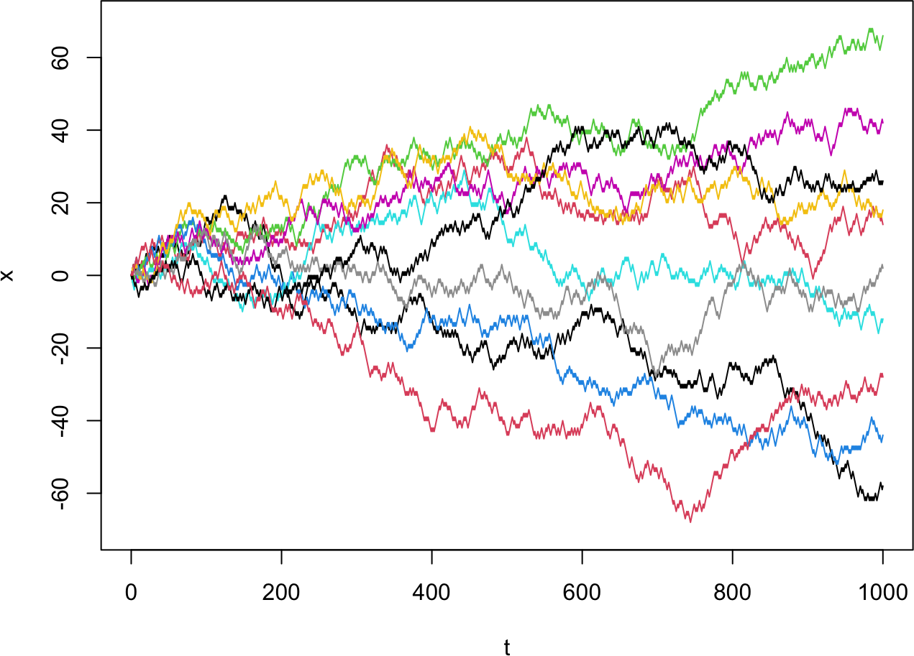

# 1D random walk, explicit loop
brownian <- function(t.total, dt, dx) {
t_all <- seq(0, t.total, by = dt)
n_all <- length(t_all)
x_all <- numeric(n_all) # starts at 0
for (i in 1:(n_all - 1)) {
x_all[i+1] <- x_all[i] + dx * sample(c(-1, 1), size = 1)
}
return(cbind(t_all, x_all))
}
# 1D random walk, vectorized (cumulative sum of random +/- steps)
brownian_concise <- function(t.total, dt, dx) {
t_all <- seq(0, t.total, by = dt)
x_all <- cumsum(sample(c(-1, 1), size = length(t_all), replace = TRUE)) * dx
return(cbind(t_all, x_all))
}
set.seed(12)
t.total <- 1000; dt <- 1; dx <- 1; nrep <- 1000 # nrep independent walks
results_bm_1d <- replicate(nrep, brownian(t.total, dt, dx)) # array [time, 2, rep]
plot(NULL, xlab = "t", ylab = "x", xlim = c(0, 1000), ylim = c(-70, 70))
for (i in 1:10) lines(results_bm_1d[,1,i], results_bm_1d[,2,i], col = i) # first 10 walks